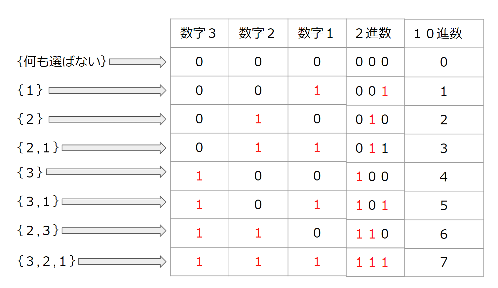
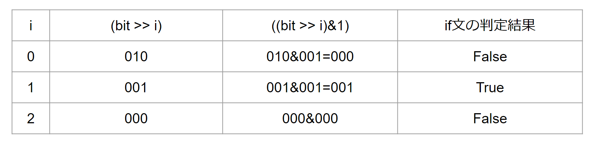

bit全探索について理解する。
概要
2^N通りあるN 個のものから、いくつか選んだ組合せを全探索するアルゴリズム
bit全探索について
上記の通り、2^N通りあるN 個のものから、いくつか選んだ組合せを全探索するアルゴリズムです。
簡単な考え方を下記に記載します。
具体例
整数1,2,3が与えられる場合、その中からいくつかを選ぶ方法を列挙する場合は8通りあると考えられます。

ここでなぜ8通りなのか考えてみます。各数字3,2,1についてそれぞれが選ぶ・選ばないの選択肢を持っています。 つまり各々の整数に対して2つの選択肢があることから、今回の3つの整数の選択肢は2^3通り(選ぶ・選ばないの2つの選択肢を持つ要素が3つあるため)であると考えられます。 n個のものから、いくつか選んだ組み合わせを探すなら、全探索でよいのではないかと考える方がいるかもしれませんが、そうした場合はn重のfor文が必要になり、コードが大変なことになります。
これらをbit全探索で実装すると少ないコードで完結することができるようになります。それではbit全探索の実装をしていきます。
手順
1, for文の条件を記述するために、いくつか選ぶ方法を2進数で表し、for文の条件式で2進数を10進数に戻し条件を記述する。
2, if文で10進数から2進数に変換し、各桁に1が立っているか判定して処理を実行する。
実装
まず手順1の、いくつか選ぶ方法を2進数で表します。つまり選んだ場合は"1"、選ばない場合を"0"として2進数を10進数に変換します。
そして、その2進数を10進数に変換します。

この時に全てを選んだ時の2進数"111"の10進数が7になっていることに注目します。0~7の8個、つまり0から2^3-1の範囲をforの条件式に指定することができるようになります。
そうすることで全てのパターンを列挙できます。
forの条件式をc++で記述していきます。
コード内のint型bitは10進数を表しており条件式の"1<<3"は2進数の1をいくつかを、選ぶ対象である。1~3の要素数3つ分右ビットシフトしています。
"<<の"シフト演算子についてわからない方は参照してください。
for文の条件式内で"bit < (1 << 3);"とする理由は、ビット1を要素数3つ分左シフトすると2進数は"1000"になります。これを10進数で表すと8に変換され条件式が10進数を 表すint型変数bitが0<8の7回回るので全てのパターンが列挙できます。
ここまでを整理すると、2進数で1と0を使うか使わないかのフラグのような役割をさせ、"bit < (1 << 3);つまり0<8回ループ処理をさせるということになります。
そして手順2のif文で10進数から2進数に変換し、各桁に1が立っているか判定します。
例えば、数値{1,2,3} 要素数3つ、bit=2の時、if((bit>>i)&1)の処理がどういう動きになるか考えていきます。
bit=2の時、2進数で表すと010になります。つまり数値{1,2,3}のうち1が立っている2が選ばれている状態であり、この時変数iが表すのは桁数なのでiは0~2の3回for処理が回ります。そして下記画像のi=1の時にif文が 実行されます。(if文は条件が1の時はTrue、0の時はfalseになるので、&演算子の演算結果で処理を分岐させられるため。)
